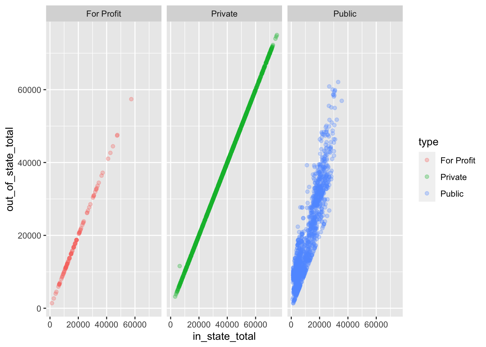

4 Paired t-test
Do in-state, or out-of-state students pay more for tuition? To begin, create a scatter plot using the tuition_cost data.
- On the x-axis plot the
in_state_totaltuition - On the y-axis plot the
out_of_state_totaltuition - Color the points of the plot by the
typeof school. (If it helps, you may filter out the “other” types of schools). - If this plot would be enhanced by showing points on different sets of axes, you might consider using the
fact_grid()layer to your plot, and set either therowsor thecolsargument of this layer to take in the variabletypeusing the callfacet_grid(cols = vars(type)).
tuition_cost %>%
filter(type %in% c('For Profit', 'Private', 'Public')) %>%
ggplot() +
aes(x=in_state_total, y=out_of_state_total, color=type) +
geom_point(alpha = 0.3) +
facet_grid(cols = vars(type)) Given what you have seen, how would you recommend proceeding with your test? Proceed in the way that you think is most reasonable. State the assumptions for your test, evaluate whether they are satisfied, and conduct the test, describing what you have learned about the statistics, and also what the practical meaning of these statistics are.
tuition_cost %>%
filter(type == 'Private') %$%
t.test(x=in_state_total, y=out_of_state_total)##
## Welch Two Sample t-test
##
## data: in_state_total and out_of_state_total
## t = -0.005875, df = 2560, p-value = 0.9953
## alternative hypothesis: true difference in means is not equal to 0
## 95 percent confidence interval:
## -1354.756 1346.662
## sample estimates:
## mean of x mean of y
## 38679.50 38683.55tuition_cost %>%
filter(type == 'Public') %$%
t.test(x=in_state_total, y=out_of_state_total)##
## Welch Two Sample t-test
##
## data: in_state_total and out_of_state_total
## t = -21.296, df = 2749.8, p-value < 2.2e-16
## alternative hypothesis: true difference in means is not equal to 0
## 95 percent confidence interval:
## -8275.923 -6880.390
## sample estimates:
## mean of x mean of y
## 10394.49 17972.65tuition_cost %>%
filter(type == 'For Profit') %$%
t.test(x=in_state_total, y=out_of_state_total)##
## Welch Two Sample t-test
##
## data: in_state_total and out_of_state_total
## t = 0, df = 212, p-value = 1
## alternative hypothesis: true difference in means is not equal to 0
## 95 percent confidence interval:
## -2859.635 2859.635
## sample estimates:
## mean of x mean of y
## 18466.17 18466.17